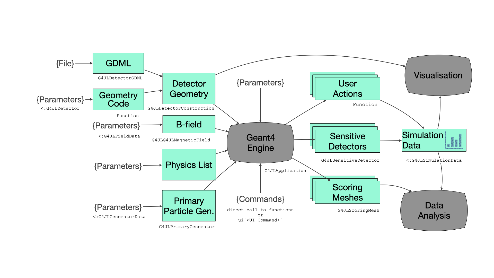

User Guide
A Geant4 application in Julia is an instance of G4JLApplication. It brings together everything needed for a simulation: the detector geometry, the physics list, the primary particle generator, an optional field, the user actions, the sensitive detectors and the scoring meshes.

The application
You create the application with keyword arguments. You need at least a detector; everything else has a default.
app = G4JLApplication(detector = mydetector, # detector with its parameters
simdata = MySimData(), # data collected during the simulation
generator = G4JLGunGenerator(...), # primary particle generator
field = G4JLUniformMagField(G4ThreeVector(0, 0, 1tesla)),
nthreads = 4, # number of worker threads (0 = sequential)
physics_type = FTFP_BERT, # physics list
stepaction_method = mystepping, # user actions
endeventaction_method = myendevent,
sdetectors = ["Chamber_LV+" => chamber_SD], # sensitive detectors
scorers = [mesh1]) # scoring meshes| Keyword | Default | Description |
|---|---|---|
detector | an empty world | A detector structure, a subtype of G4JLDetector |
simdata | G4JLNoData() | User data collected during the simulation, a subtype of G4JLSimulationData. See Simulation data and multi-threading |
generator | G4JLGunGenerator() | Primary particle generator |
field | nothing | Magnetic or electric field |
evtdisplay | nothing | Event display, from G4JLEventDisplay() |
nthreads | 0 | Number of worker threads. 0 runs sequentially; any value above 0 uses Geant4 multi-threading with a G4MTRunManager |
verbose | 0 | Verbosity level of the physics list |
physics_type | FTFP_BERT | Physics list type |
runmanager_type | G4RunManager | Run manager type, ignored when nthreads > 0 |
*action_method | nothing | User actions |
sdetectors | [] | Sensitive detectors, as pairs "logical volume name" => sd |
scorers | [] | Scoring meshes |
Once the application exists, you control it with these functions:
configure(app): sets up the run manager with the physics list, the generator and the user actions.initialize(app): constructs the geometry, initializes the physics and attaches the sensitive detectors and the field.beamOn(app, nevents): runsneventsevents. You can call it as many times as you like.reinitialize(app, detector): replaces the detector with a new instance, for example with different parameters, before the nextbeamOn.
Geant4 UI commands can be applied at any point with the ui string macro:
ui`/tracking/verbose 1`
ui`/run/printProgress 100`Detector geometry
The detector parameters are kept in a structure that is a subtype of G4JLDetector. You also provide a function that builds the geometry from these parameters and returns the world physical volume. You register it by specializing Geant4.getConstructor:
using Parameters # optional, for structures with default values
@with_kw mutable struct B2aDetector <: G4JLDetector
chamberRadius::Float64 = 20cm
checkOverlaps::Bool = true
end
function construct(det::B2aDetector)::CxxPtr{G4VPhysicalVolume}
(; chamberRadius, checkOverlaps) = det
...
return worldPV
end
Geant4.getConstructor(::B2aDetector) = constructInside the construction function, you use the Geant4 classes directly: solids (G4Box, G4Tubs, G4Cons, ...), G4LogicalVolume, G4PVPlacement, G4PVReplica, and materials from G4NistManager. Pass solids to G4LogicalVolume with move! so that Geant4 takes ownership of them (see Object ownership):
trackerS = G4Tubs("tracker", 0, trackerSize, trackerSize, 0, 360deg)
trackerLV = G4LogicalVolume(move!(trackerS), m_air, "Tracker")
G4PVPlacement(nothing, # no rotation
G4ThreeVector(0,0,0), # at (0,0,0)
trackerLV, # its logical volume
"Tracker", # its name
worldLV, # its mother volume
false, # no boolean operations
0, # copy number
checkOverlaps) # checking overlapsG4PVPlacement accepts nothing for "no rotation" and "no mother volume".
GDML
To read a detector from a GDML file, use G4JLDetectorGDML:
detector = G4JLDetectorGDML("TestEm3.gdml"; check_overlap = false)Physics list
physics_type takes one of the predefined Geant4 reference physics lists, for example FTFP_BERT, QGSP_BIC, QBBC or QGSP_BERT_HP. To change the physics, define a subtype of G4VUserPhysicsList whose constructor starts from a reference list and modifies it:
struct ScintPhysicsList <: G4VUserPhysicsList
function ScintPhysicsList(verbose)
pl = FTFP_BERT(verbose)
# replace the standard EM physics with option 4
ReplacePhysics(pl, move!(G4EmStandardPhysics_option4(verbose)))
# add optical physics
RegisterPhysics(pl, move!(G4OpticalPhysics(verbose)))
optpar = G4OpticalParameters!Instance()
SetProcessActivation(optpar, "Scintillation", true)
SetProcessActivation(optpar, "Cerenkov", true)
return pl
end
end
app = G4JLApplication(; physics_type = ScintPhysicsList, ...)Fields
The field argument sets a global field.
- Uniform magnetic field:
G4JLUniformMagField(G4ThreeVector(0, 0, 1tesla)). - Uniform electric field:
G4JLUniformElectricField(G4ThreeVector(0, 1e8volt/cm, 0)). The electric field equation of motion and stepper are set up for you. See the field02 example. - Custom field: define a data structure that is a subtype of
G4JLFieldDataand a function that fills in the field value at a given position. Then create aG4JLMagneticFieldor aG4JLElectricField:
mutable struct QuadrupoleData <: G4JLFieldData
gradient::Float64
end
function getfield!(field::G4ThreeVector, pos::G4ThreeVector, data::QuadrupoleData)::Nothing
g = data.gradient
assign(field, G4ThreeVector(g * y(pos), g * x(pos), 0)) # assign the result in place
return
end
bfield = G4JLMagneticField("Quadrupole", QuadrupoleData(1tesla/m); getfield_method = getfield!)To set a field on a single volume, create a G4FieldManager and pass it as the fourth argument of G4LogicalVolume.
Primary particle generators
Particle gun
G4JLGunGenerator wraps a G4ParticleGun, which produces one particle type with a fixed energy, position and direction:
G4JLGunGenerator(particle = "proton",
energy = 3GeV,
direction = G4ThreeVector(0,0,1),
position = G4ThreeVector(0,0,-2940.0))General particle source
G4JLGeneralParticleSource wraps a G4GeneralParticleSource. It can combine several sources, each with its own distributions for energy, position and angle:
src1 = (particle="e+", intensity=0.5,
ene=(type="Exp", min=2MeV, max=10MeV, ezero=2.),
pos=(type="Plane", shape="Circle", centre=G4ThreeVector(1cm,2cm,0cm), radius=3cm),
ang=(type="cos", mintheta=0deg, maxtheta=180deg))
src2 = (particle="gamma", intensity=0.5,
ene=(type="Brem", min=2MeV, max=10MeV, temp=2e12),
pos=(type="Plane", shape="Ellipse", centre=G4ThreeVector(3cm,1cm,0cm), halfx=1cm, halfy=2cm),
ang=(type="iso", mintheta=0deg, maxtheta=180deg))
gps = G4JLGeneralParticleSource(sources = [src1, src2])It also accepts the same arguments as the particle gun. See the GPS example for more distributions.
Custom generator
A custom generator needs three things:
- a data structure, a subtype of
G4JLGeneratorData - an initialization function
(data, app), called once in each thread when the application is configured - a generation function
(event::G4Event, data), called for each event
Pass all three to G4JLPrimaryGenerator:
mutable struct PlaneSourceData <: G4JLGeneratorData
particleName::String
particlePtr::CxxPtr{G4ParticleDefinition}
energy::Float64
halfx::Float64
halfy::Float64
position::G4ThreeVector
direction::G4ThreeVector
end
function PlaneSource(; particle="gamma", energy=0.07MeV, halfx=7cm, halfy=7cm,
position=G4ThreeVector(0,0,-14.9cm), direction=G4ThreeVector(0,0,1))
data = PlaneSourceData(particle, CxxPtr{G4ParticleDefinition}(C_NULL), energy, halfx, halfy, position, direction)
function init(data::PlaneSourceData, app::G4JLApplication)
data.particlePtr = FindParticle(data.particleName)
end
function generate(evt::G4Event, data::PlaneSourceData)::Nothing
mass = data.particlePtr |> GetPDGMass
momentum = √((mass + data.energy)^2 - mass^2)
pvec = momentum * data.direction
pos = data.position + G4ThreeVector(data.halfx * (rand() - 0.5), data.halfy * (rand() - 0.5), 0)
primary = G4PrimaryParticle(data.particlePtr, x(pvec), y(pvec), z(pvec))
vertex = G4PrimaryVertex(pos, 0ns)
SetPrimary(vertex, move!(primary)) # Geant4 takes ownership of the primary
AddPrimaryVertex(evt, move!(vertex)) # and of the vertex
end
G4JLPrimaryGenerator("PlaneSource", data; init_method=init, generate_method=generate)
endUser actions
User actions are ordinary Julia functions that Geant4 calls during the simulation. Pass them to G4JLApplication with these keywords:
| Keyword | Called | Signature |
|---|---|---|
beginrunaction_method | at the start of each run | (::G4Run, ::G4JLApplication)::Nothing |
endrunaction_method | at the end of each run | (::G4Run, ::G4JLApplication)::Nothing |
begineventaction_method | at the start of each event | (::G4Event, ::G4JLApplication)::Nothing |
endeventaction_method | at the end of each event | (::G4Event, ::G4JLApplication)::Nothing |
pretrackaction_method | when a track starts | (::G4Track, ::G4JLApplication)::Nothing |
posttrackaction_method | when a track ends | (::G4Track, ::G4JLApplication)::Nothing |
stepaction_method | after each step | (::G4Step, ::G4JLApplication)::Nothing |
stackaction_method | for each new track | (::G4Track, ::G4JLApplication)::G4ClassificationOfNewTrack |
statechange_method | when the Geant4 application state changes | (from::G4ApplicationState, to::G4ApplicationState, ::G4JLApplication)::Bool |
The class reference lists what you can get from G4Run, G4Event, G4Track and G4Step. For example:
function stepping(step::G4Step, app::G4JLApplication)::Nothing
volume = step |> GetPreStepPoint |> GetTouchable |> GetVolume
String(GetName(volume)) == "Absorber" || return
getSIMdata(app).edep += GetTotalEnergyDeposit(step)
return
endEvery action receives the application, so it can reach the detector (app.detector), the generator (app.generator) and the simulation data (getSIMdata(app)).
User actions are called very often, so keep them type-stable and avoid allocating memory in them. In multi-threaded mode they run concurrently, so they must only modify the data of their own thread (see the next section).
Simulation data and multi-threading
Data collected during the simulation (counters, histograms, hits, ...) goes in a mutable structure that is a subtype of G4JLSimulationData. The application keeps one copy for each thread, in app.simdata:
app.simdata[1]belongs to the master thread (or the only thread, in sequential mode).app.simdata[2:end]belong to the worker threads.
Within a user action, getSIMdata(app) returns the copy for the current thread. To get the totals at the end of a run, add the worker copies to the master copy in the end-of-run action of the master thread:
function endrun(run::G4Run, app::G4JLApplication)::Nothing
if G4Threading!G4GetThreadId() < 0 # master thread
data = app.simdata[1]
for d in app.simdata[2:end]
add!(data, d) # user-defined merge function
end
# ... print or plot the results
end
return
endClear the data at the start of each run (in beginrunaction_method) so that consecutive beamOn calls don't accumulate.
To print from a worker thread, use G4JL_println. It writes through the Geant4 output stream, adds the thread prefix and is thread-safe.
Sensitive detectors
A sensitive detector collects hits in one or more logical volumes. It is made of a data structure (a subtype of G4JLSDData) and up to three functions, which receive the data structure as their last argument:
| Keyword | Called | Signature |
|---|---|---|
processhits_method (required) | for each step in the volume | (::G4Step, ::G4TouchableHistory, data)::Bool |
initialize_method | at the start of each event | (::G4HCofThisEvent, data)::Nothing |
endofevent_method | at the end of each event | (::G4HCofThisEvent, data)::Nothing |
processhits_method returns true when the step produced a hit. This example, adapted from B2a, collects the hits in a vector. GetPosition returns a reference to Geant4 data that changes after the step, so the hit stores a copy of its coordinates:
struct TrackerHit
trackID::Int32
chamberNb::Int32
edep::Float64
pos::NTuple{3,Float64}
end
struct B2aSDData <: G4JLSDData
trackerHits::Vector{TrackerHit}
B2aSDData() = new([])
end
function _initialize(::G4HCofThisEvent, data::B2aSDData)::Nothing
empty!(data.trackerHits)
return
end
function _processHits(step::G4Step, ::G4TouchableHistory, data::B2aSDData)::Bool
edep = step |> GetTotalEnergyDeposit
edep < 0. && return false
pos = step |> GetPostStepPoint |> GetPosition
push!(data.trackerHits, TrackerHit(step |> GetTrack |> GetTrackID,
step |> GetPreStepPoint |> GetTouchable |> GetCopyNumber,
edep, (x(pos), y(pos), z(pos)))) # copy the position
return true
end
chamber_SD = G4JLSensitiveDetector("Chamber_SD", B2aSDData();
processhits_method = _processHits,
initialize_method = _initialize)Then attach it to logical volumes by name. A trailing + attaches it to every logical volume with that name, not only the first one:
app = G4JLApplication(; sdetectors = ["Chamber_LV+" => chamber_SD], ...)From a user action, getSDdata(app, "Chamber_SD") returns the sensitive detector data for the current thread.
Scoring meshes
Scoring meshes accumulate quantities on a grid without any user code. In C++ Geant4 you set them up with /score/... UI commands; here you create them with G4JLScoringMesh. For example, from RE03:
sc1 = G4JLScoringMesh("boxMesh_1",
BoxMesh(1m, 1m, 1m),
bins = (30, 30, 30),
quantities = [ energyDeposit("eDep")
nOfStep("nOfStepGamma", filters=[ParticleFilter("gammafilter", "gamma")])
nOfStep("nOfStepEMinus", filters=[ParticleFilter("eMinusFilter", "e-")])
nOfStep("nOfStepEPlus", filters=[ParticleFilter("ePlusFilter", "e+")])
])
app = G4JLApplication(; scorers = [sc1], ...)The mesh can be a BoxMesh or a CylinderMesh. The available quantities are energyDeposit, doseDeposit and nOfStep, each with optional filters.
After a run, each quantity can be read as a property of the mesh. It returns the sum, the sum of squares and the number of entries, as Julia arrays with the shape of the bins:
julia> beamOn(app, 10000)
julia> sum, sum2, entries = sc1.eDep;
julia> size(sum)
(30, 30, 30)Visualization
Visualization comes from the G4Vis extension, which is activated when you load a Makie backend: CairoMakie for static images (notebooks, documentation) or GLMakie for interactive 3D windows.
Drawing geometry
draw renders a solid, a logical volume or a physical volume; draw! adds it to an existing scene:
using GLMakie
draw(G4Box("box", 10cm, 10cm, 10cm), color=:green)
draw(GetWorldVolume(), wireframe=true, maxlevel=3) # the geometry of the current applicationThe Solids and GDML rendering examples show more options.
Event display
To display the geometry with the trajectories of each event, pass a G4JLEventDisplay to the application:
evtdisplay = G4JLEventDisplay(joinpath(@__DIR__, "B2aVisSettings.jl"))
app = G4JLApplication(; evtdisplay = evtdisplay, ...)The optional settings file contains a Julia NamedTuple. It overrides the defaults in ext/G4Vis/settings.jl, which include the background color, resolution, camera, trajectory color and how deep the detector hierarchy is drawn:
(
display = (
show_axis = false,
),
trajectories = (
color = :yellow,
),
)After each beamOn, evtdisplay.figure holds the figure of the last event. See the B2aVis example.
Histograms
The G4Hist extension is activated when you load FHist. It provides H1D and H2D: histograms that carry a title and a unit, and support push!, merge! and empty!. That makes them convenient inside simulation data structures:
using FHist
h = H1D("Energy deposit", 100, 0., 10., :MeV)
push!(h, edep) # edep in Geant4 internal units, stored in MeV